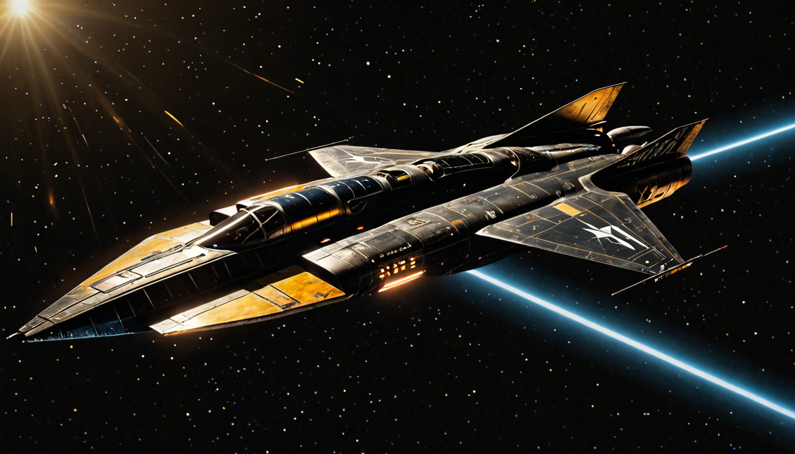
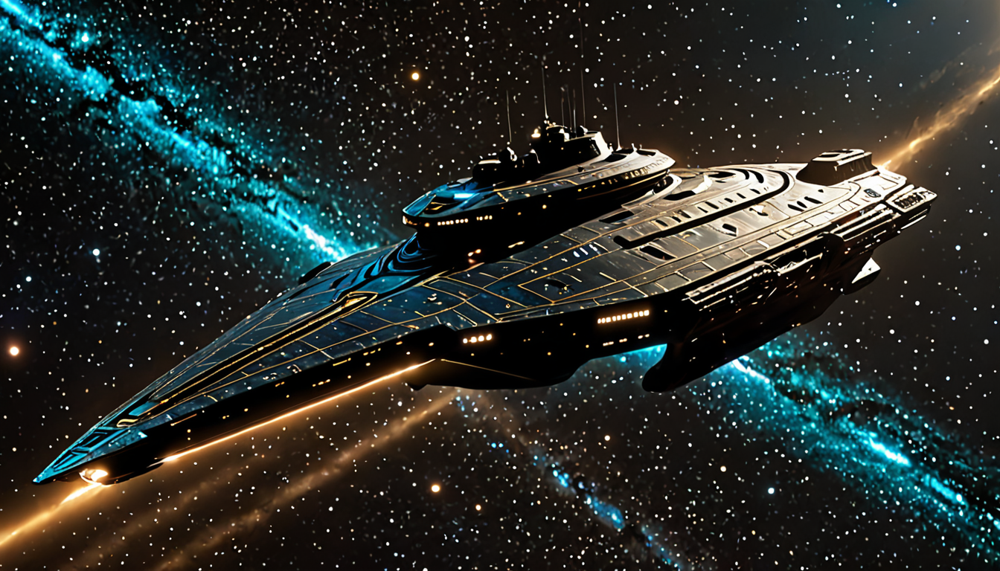
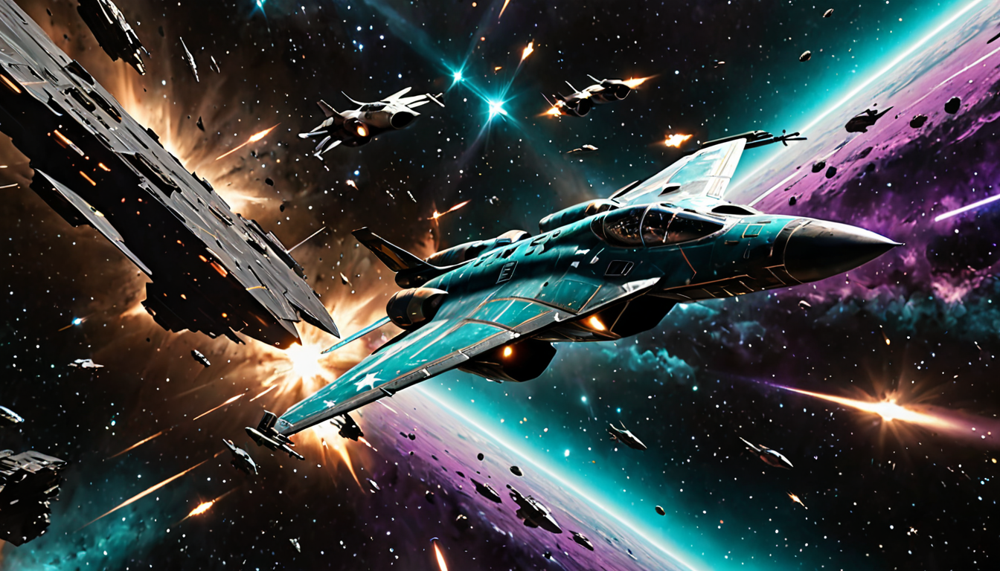

Building a Fully Automated Sci-Fi YouTube Channel
An end-to-end pipeline that writes, illustrates, narrates, assembles and uploads cinematic sci-fi stories — with almost no manual input.
Overview
TOWARDS TERRA is a YouTube channel of cinematic, HFY-style ("Humanity, F*** Yeah") sci-fi stories — grand fleet battles, last stands, rescues, sieges — that runs almost entirely on its own. A scheduled pipeline picks or writes a story, generates its artwork, narrates it, assembles the video, and uploads it, on a daily cadence, without me touching it. To date the channel has passed 10,000 views from content produced this way.

The project started as "can I get an LLM to write a decent short story" and grew into a genuine content pipeline: story generation, image generation, text-to-speech narration, video assembly, captioning, thumbnailing, and scheduled upload — each stage automatable, each stage with its own failure modes to design around.
Architecture
The pipeline runs as five stages feeding into each other:
1. Write
Story + premise
2. Illustrate
Scene & thumbnail art
3. Narrate
Voice + captions
4. Assemble
Video + audio mux
5. Publish
Scheduled upload
Everything runs locally except the story-writing LLM calls. A daily scheduled job (--auto) handles the full run unattended; a separate manual mode lets me trigger one-off renders for testing changes before they hit the schedule.
Story Writing
Stories are written by Claude, in two ways: live (per-video) and via a pre-built story pool — batches of stories generated ahead of time through Anthropic's Message Batches API at 50% of the normal cost, since batch requests don't need to run in real time. The pipeline pulls from the pool first, and only falls back to a live write when it's empty.
Story quality went through real iteration. Early scripts confused viewers, so I wrote a "Clarity Law" into the prompt: one named protagonist, at most three named characters, a linear timeline, at most three invented terms, one twist, stakes restated roughly every three scenes. I also had to teach the writer to avoid heteronyms that trip up text-to-speech — e.g. the past tense "read" (pronounced "red") gets silently rewritten to "said"/"recited" so the narration doesn't stumble.
The channel's content policy also evolved: an early no-people rule (to avoid AI-generated faces looking obviously wrong) was relaxed to "figures are welcome, just keep faces small, distant, turned-away or helmeted" once I'd solved the image-quality problems that made close-up faces the actual issue.
Visual Generation
Scene and thumbnail art is generated locally with ComfyUI running an SDXL Lightning checkpoint on an RTX 3070 Ti — fast enough (8 steps) to render a full video's worth of images without relying on a paid image API.

Getting these images to actually match the story was the single hardest part of the project. Early on, prompts for "space carrier" or "decoy shipyard hulk" would occasionally render something absurd — the model's strong prior for other subjects would leak through, including once literally rendering the Marvel Hulk into a battle scene because "hulk" collided with the checkpoint's training data. That got fixed by fusing nouns ("space carrier spacecraft" instead of bare "carrier"), banning specific trigger words, and reordering negative prompts so the important bans didn't get truncated past the model's token limit.
The visual style itself went through roughly seven rounds of A/B testing before landing on the current look: a gritty, realistic film-still aesthetic (muted hull tones, harsh single-source lighting, fine surface detail, restrained colour) that replaced an earlier, more "painterly" style once I decided the vivid version read as too obviously AI-generated.
To catch remaining drift automatically, I built a lightweight QC pass that uses a vision model to flag misaligned frames for review or re-roll before they ever make it into a finished video — catching issues without needing to manually review every single frame.
Narration
Narration started on Kokoro, a fast local TTS model, and later migrated long-form videos to Chatterbox for higher quality (shorts stayed on Kokoro, where speed matters more than nuance). The narration pipeline supports multiple character voices — a narrator voice plus distinct voices for named characters when a story calls for dialogue — which also happens to reduce the "every video sounds identical" tell that flags mass-produced AI content.
One bug worth mentioning because of how subtle it was: video assembly used to crossfade audio at every scene-image boundary, which meant two different half-seconds of narration played simultaneously at every transition. The fix was to render silent video-only clips, crossfade those, and mux the untouched, unsliced narration over the top afterwards — simple once found, but it took a while to realise the bug was in the video layer, not the TTS.
Assembly, Captions & Upload
Finished audio and imagery are assembled into video with ffmpeg, captioned via a local Whisper model (so captioning works offline and doesn't depend on an API being up), and uploaded through the YouTube Data API with scheduling built in.

Every upload is explicitly flagged as AI-generated / synthetic media, both via YouTube's own API field (which triggers their visible "Altered content" label) and a plain-text disclosure appended to the description — this felt like the right default given how much of the pipeline is automated.
Debugging in Public
A few incidents stand out as the kind of thing you only learn by shipping:
- A rendering pass once produced a frame that, unmistakably, was the Marvel Hulk — in the middle of a serious space-battle story. It shipped before I caught it, and had to be swapped out on a live video.
- An audit of a batch of "finished" videos found roughly half had some form of subject or setting drift (space scenes rendering as ocean/terrain, capital ships rendering as battle-mechs) that wasn't visible without a systematic review pass — which is what motivated building the automated QC step.
- A full visual style change was only locked in after direct, iterative feedback ("tone down the colours", "less painterly, more gritty realism") across roughly seven rounds of side-by-side image comparisons.
None of these were fatal, but all of them were the kind of failure that only shows up at real scale — one video looks fine, a hundred videos exposes the pattern.
Tech Stack
- Story generation: Claude (Anthropic API + Message Batches API for pre-generated story pools)
- Image generation: ComfyUI, SDXL Lightning checkpoint, local GPU inference
- Narration: Kokoro (shorts) & Chatterbox (long-form) local TTS, multi-voice casting
- Captioning: faster-whisper (local, offline)
- Assembly: ffmpeg
- Publishing: YouTube Data API v3, scheduled uploads, synthetic-media disclosure
- QC: vision-model-based drift detection on generated frames
Reflection
The interesting engineering problems here weren't the individual API calls — those are all well-documented and straightforward on their own. It was making the whole thing reliable and hands-off end to end: catching quiet failure modes (image drift, doubled audio, heteronym mispronunciations), building fallbacks for every external dependency (pooled stories and baked image prompts both exist specifically so a render can survive an API outage), and being willing to throw out and redo an entire visual style once it stopped meeting the bar, rather than settling for "good enough."